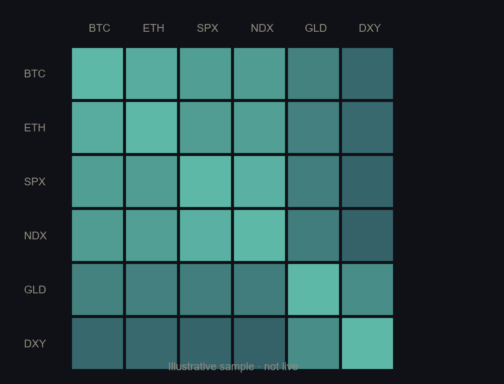

AestusSAMPLE · not a live feed$AESTUSCA · TBAillustrative · draft panel← Whitepaper
Macro Aestus Index
Risk-On · sample
Regime probability
decoded from the cross-asset panel · illustrative
Risk-On
0.58
Neutral
0.27
Risk-Off
0.15
Liquidity drivers
USD (DXY)−0.4σ
10y real yield+0.1σ
Liquidity proxy L+0.6σ
Mean pairwise ρ̄0.41
Macro Aestus Index — trailing window
shaded bands = decoded regime · solid = index · dashed = mean ρ̄ · sample series
Illustrative sample. Live data at genesis.
Conditional correlation
trailing-window correlation across the panel

Sensitivity to the tide (β)
per-asset beta to Δindex · sample · SPX = 1
Asset
β
NDX
1.18
BTC
1.42
ETH
1.51
SPX
1.00
Gold
−0.22
DXY
−0.61
Hidden Markov regime model
3 latent states · illustrative topology
Transition matrix A · sample
P(st | st−1) — illustrative
On
Neu
Off
On
0.94
0.05
0.01
Neu
0.06
0.88
0.06
Off
0.02
0.16
0.82
Sample persistence. Not estimated from a live window on this page.
Regime statistics · sample
Regime
Mean ρ̄
Ann. vol
Share
Risk-On
0.32
12%
48%
Neutral
0.45
16%
34%
Risk-Off
0.78
28%
18%
Latest report · sample
model output shape for one epoch
RegimeRisk-On
Index T62.4
P(on)0.58
Methodologyv0.1-draft
Input hash0xsample…
On-chain contract is not deployed. Operator fields are placeholders.
Oracle parameters · research vision
direction, not entitlement
Settlement chainL2 · TBA
Contractnot deployed
Reporting epoch1 day
Challenge windowhours-scale
Operators1 (intended first stage)
Verificationoptimistic
Pipeline
how a report would reach the chain — when built
Off-chain
data pipeline
model engine
operator node
→
Bridge
signed report
{regime, T, hash, sig}
→
On-chain · L2
AestusOracle.sol
store · challenge · finalize
Sample telemetry only — not a live feed.
$AESTUS · CA TBA · GitHub TBA.
Token and oracle staking described in the whitepaper are a brand / research layer,
not wired to this page. See §9 The Aestus Token.
Not financial advice.